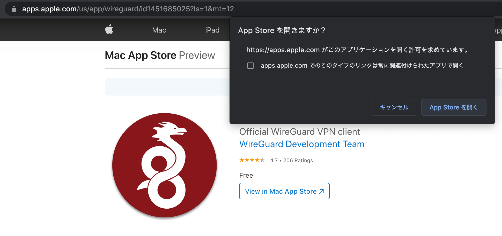
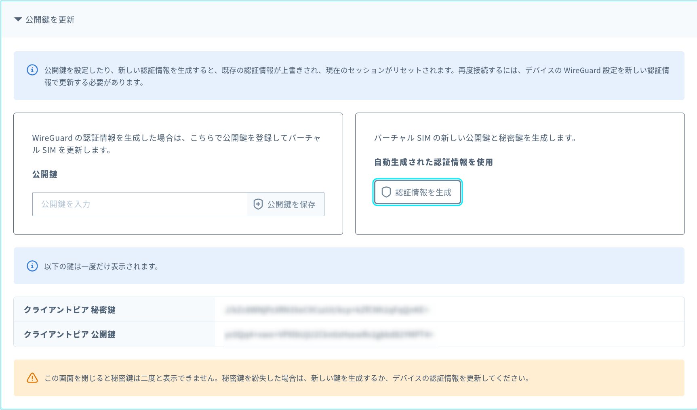
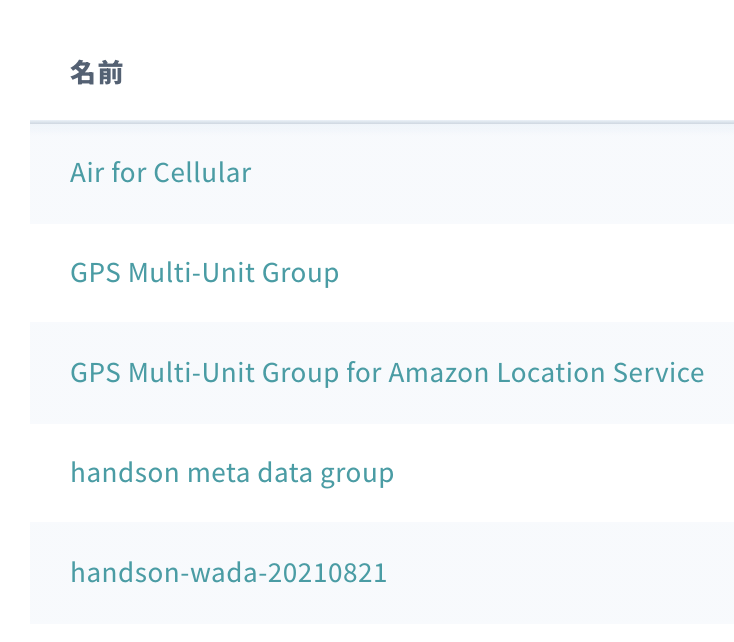
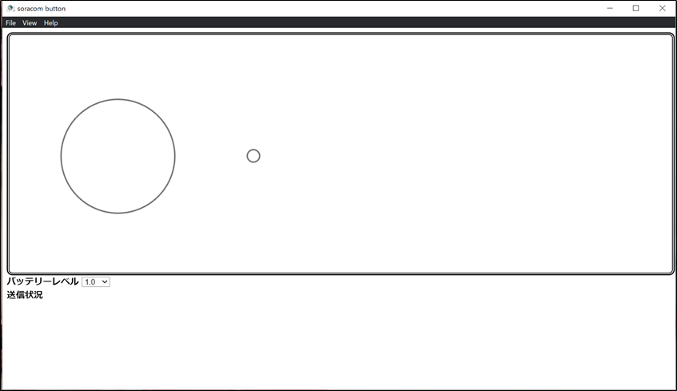
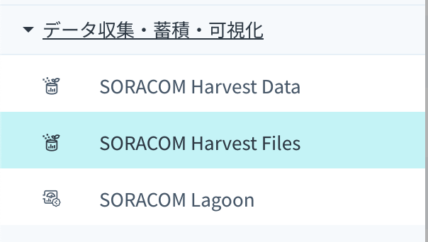
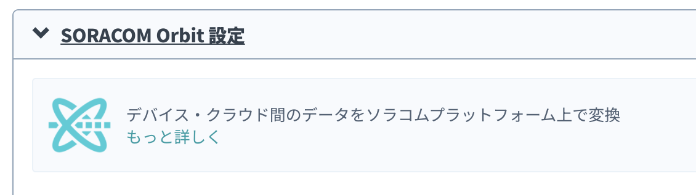
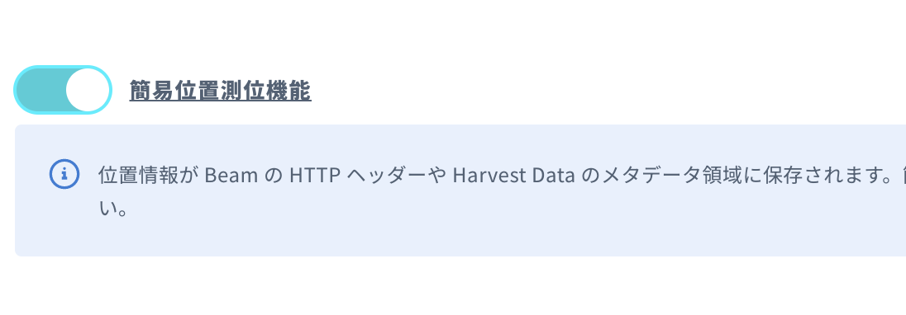
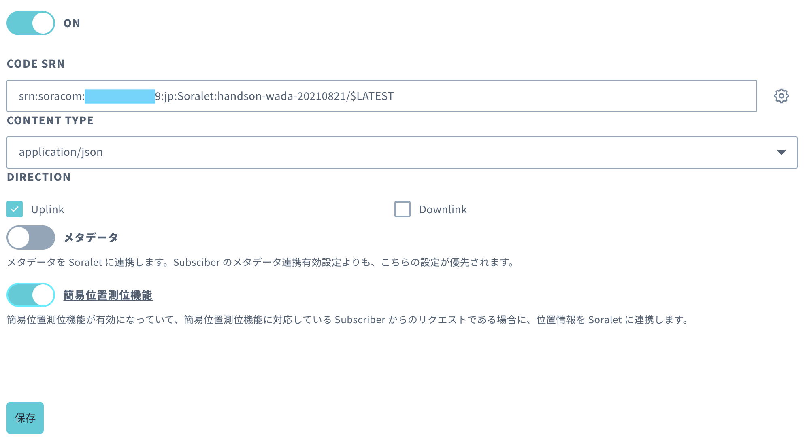

前提
- PC (Windows もしくは macOSで、ブラウザはChrome、もしくは Firefoxをインストールしておいてください)
- SORACOMアカウント (SORACOMアカウントの作成手順はこちら)
- LINEのアカウント(メールアドレスとパスワードの登録をお願いします。登録手順はこちら)
構成図
SORACOM Arcについて
今回のハンズオンでは、「セキュアリンクサービス SORACOM Arc」(以下、Arc)を用いてみなさんのPCをSORACOMサービスに接続します。
Arcについて詳しくは以下の公式ページを参照ください。
https://soracom.jp/services/arc/
PCでArcを使うには以下の2つの方法があります。
- 公式ツール「soratun」を用いる(Linux/Mac)
- WireGuardを用いる(Windows/Mac/Android/iOSなど)
今回は、WireGuardを用いて接続をします。
利用料金
Arcの利用料金は以下の通りです。
- 初期費用(契約事務手数料)
1 バーチャル SIM/Subscriber あたり 55 円 - 基本使用料(月額)
1 バーチャル SIM/Subscriber あたり
55 円 (SORACOM IoT SIM に追加する場合)
88 円 (バーチャル SIM/Subscriber 単独で利用する場合)
- データ通信料
1 バーチャル SIM/Subscriber ごとに 1 GB あたり 22 円
SORACOM プラットフォームへのデータ通信量に応じて料金が発生します。
上り、下りの合計となります。ただし、毎月 1GB までは基本料金に含みます。 - 無料利用枠
1 アカウントあたりバーチャル SIM/Subscriber 1契約分の基本使用料(月額)、1GB 分のデータ通信料が無料枠として提供されます。
なお、1 アカウントあたり 1 回に限り、バーチャル SIM/Subscriber の初期費用が無料となります。
今回のハンズオンでは、ほとんどの方は初めてバーチャルSIMを作成することになりますので、無料枠の中でご利用いただけます。
また、ハンズオン終了後にバーチャルSIMを解約しないでも、翌月以降費用が発生することもありません。作成時の初期費用が無料になるのも最初の1回だけなので、そのまま残しておくのをお勧めします。
WireGuardについて
WireGuardはオープンソースのVPN実装です。OpenVPNやIPsec等に比べ、セットアップが非常に容易で、パフォーマンスにも優れているという特徴があります。
Linuxのカーネルモジュールでの実装の他に、アプリケーション(ユーザー空間)での実装があります。
詳細は公式ページをご覧ください。
https://www.wireguard.com/
SORACOM Beamについて
今回のハンズオンでは、「データ転送サービス SORACOM Beam」(以下、Beam)を用いてOrbitで加工した、ボタンシュミレータから受信データをLine Notifyに転送します。
Beamについて詳しくは以下の公式ページを参照ください。
https://soracom.jp/services/beam/
利用料金
Beamの利用料金は以下の通りです。
- 基本料金
無料 - 従量課金
1 リクエスト(*) あたり 0.00099 円
※エントリーポイント (Beam) へのリクエスト、Beamから転送先へのリクエスト、それぞれを個別に 1 リクエストとカウントします。
- 無料利用枠
SORACOM Beam は、無料利用枠をご提供しています。 1アカウントあたり月間 100,000 リクエストまで毎月無料とさせていただきます。 なお、リクエスト数が 100,000 リクエストに満たない場合でも翌月に持ち越されることはありません。
今回のハンズオンでは、それぞれ個別のアカウントで作業を行い、リクエストも通常であれば100,000リクエストには達しませんので、無料枠の中でご利用いただけます。
SORACOM Harvestについて
今回のハンズオンでは、「データ収集・可視化サービス SORACOM Harvest」(以下Harvest)を用いてボタンシュミレータから受信したデータを可視化します。
Harvest自体は、データの蓄積(Harvest Data)とファイルの保存(Harvest Files)の2つがありますが、今回は、Harvest Dataのみ扱います。
アップロードされたデータは標準で40日間保存されます。
Harvestについて詳しくは以下の公式ページを参照ください。
https://soracom.jp/services/harvest/
利用料金
Harvestの利用料金は以下の通りです。
- Harvest 利用オプション
Harvest を有効にしたグループに所属する 1 SIM カードまたは 1 デバイスあたり
1 日 5.5 円 - 従量課金
書き込みリクエスト: 1 リクエストあたり 0.0044 円
1 SIM カード / デバイスあたり 1 日 2,000 リクエストまでの料金は上記の「Harvest 利用オプション」の料金内に含まれます。
2,001 回目のリクエストから課金対象です。
- 無料利用枠
SORACOM Harvest は無料利用枠をご提供しています。
1 アカウントあたり毎月 31 日 分の「Harvest 利用オプション」が無料です。（月末締めで自動で計算されます。）
2 つの SIM カード / デバイスで 15 日だけ利用した場合なども合計で 31 日以内なので無料利用枠の対象です。
無料利用枠内で利用している場合でも、書き込みが 1 日 2,000 リクエストを超えた分は従量課金が発生します。
月内の利用日の合計が 31 日以内でも無料利用枠が翌月に持ち越されることはありません。
今回のハンズオンでは、バーチャルSIM１つを用い、書き込みも通常であれば2,000リクエストには達しませんので、無料枠の中でご利用いただけます。
SORACOM Orbitについて
今回のハンズオンでは、「インラインプロセッシングサービス SORACOM Orbit」(以下Orbit)を用いてボタンシュミレータから受信したデータを加工します。
今回は、時間の都合上事前に用意したWASMを用います。
Appendixとして、開発環境構築、コード準備、ビルドを行う方法も記載しておりますので、興味がある方はそちらも合わせて行なってください。
Orbitについて詳しくは以下の公式ページを参照ください。
https://soracom.jp/services/orbit/
利用料金
Orbitの利用料金は以下の通りです。
- 利用料金
Orbitを利用したSIMの数に応じて、料金が発生します。
SIM 毎に 22 円/月
- リクエスト料金
オペレーター単位にリクエスト数の合計数に応じて料金が発生します
10,000 リクエストあたり 44 円
- 無料利用枠
1 アカウント、カバレッジごとに、以下の無料利用枠をご提供いたします。
無料利用枠: 1SIM分
リクエスト無料利用枠: 10,000リクエスト分
今回のハンズオンでは、バーチャルSIM１つを用い、リクエストも通常であれば10,000リクエストには達しませんので、無料枠の中でご利用いただけます。
LINE Notifyについて
今回のハンズオンでは、LINE Notifyを使って、LINEに対して、通知を行います。
以下のような特徴があります。
No Money - 有料プランはなく、完全に無料
No Provider - アクセストークンを発行するだけなので管理が楽
No User ID - ユーザーIDの指定不要
LINE Notifyについて詳しくは以下の公式ページを参照ください。
https://notify-bot.line.me/ja/
LINEに通知を送ることができるサービス「LINE Notify」の API を呼び出すために必要なトークンを取得します。
LINE Notifyにログイン
Tokenを取得するために、Line Nofityにログインします。
- https://notify-bot.line.me/ja/ にアクセスします。
- 右上の[ログイン]をクリックします。
- LINEに登録済みのメールアドレスとパスワードを入力してログインします。

トークン取得
ログインしたらトークンを取得します。なお、ここで発行したトークンは同じものは再発行できないので、無くなさないようにお願いします。
- 右上のアカウント名が表示されているところをクリックして、[マイページ ]をクリックします。
- アクセストークンの発行(開発者向け)の[トークンを発行する]をクリックします。
- トークンを発行するでは、以下の設定を行います。
トークン名 : soracom-handson (名称は任意です)
通知を送信するトークルーム : 1:1でLINE Notifyから通知を受け取る
- [発行する]をクリックします。トークンが発行されます。
- 前述のとおり、発行されたトークンはここでしか取得できませんので、必ずコピー([コピー]をクリック)して、テキストエディッタなどに貼り付けて保存しておきましょう。
トラブルシューティング
設定がうまく進まないときにご覧ください。ここまでの作業が出来ている場合は次に進んでください。
- ログインできない。https://guide.line.me/ja/account-and-settings/account-and-profile/set-email-address.html を参考に、再度LINEアプリでメールアドレスとパスワードの設定をお願いします。
- トークンをコピーするのを忘れてしまった。
再発行できないので、再度トークンの発行の手順を行ってください。
PCからSORACOM Arcに接続するための必要な VPN ソフトウェア「WireGuard」をインストールします。OS 毎の解説を確認してください。
インストール / Windows 編
- https://www.wireguard.com/install/ から
 をクリックして
をクリックして wireguard-installer.exeをダウンロードします。 - ダウンロードした
wireguard-installer.exeを実行します。 - 実行中に管理者権限を求められた場合は許可してください。
- 最終的に以下のような画面が表示されればインストール成功です。この画面は後で利用しますので、表示しておいてください。
インストール / macOS 編
- https://www.wireguard.com/install/ からをクリックします。
- ブラウザ上でApp Storeの画面が表示されますが、その際ダイアログで、「App Store を開きますか？」と表示されるので、[App Storeを開く]をクリックします。

- App Store画面が表示されたら、右上のダウンロードをクリックします。
- ダウンロードおよびインストールが終わったら、以下の画面になりますので[開く]をクリックします。
- 最終的に以下の画面が表示されれば、インストール完了です。
WireGuardに設定する接続情報をSORACOMから入手します。接続情報は「バーチャルSIM」をSORACOM上で作成することで生成されます。
バーチャルSIMの作成
次に、SORACOMのコンソールからArcのバーチャルSIMを作成します。
- SORACOMのコンソールにログインします。
https://console.soracom.io にアクセスすると以下のような画面が表示されます。メールアドレスとパスワードを入れ、「ログイン」ボタンを押します。
普段SAMでログインしている場合は、そちらでログインしても問題ありません。 - 正常にログインできると、多くの方は最初に以下のようにSIM管理の画面が表示されます。まだSIMをお持ちで無い場合は、一覧の部分は空欄になります。
もしこの画面が表示されない場合は、左上の「Menu」から「SORACOM Air forセルラー」→「SIM管理」を選んでください。 - 「サブスクリプションコンテナに対応した新しい SIM 管理画面」に切り替えます。「切り替える」をクリックしてください。

以下のように「サブスクリプションコンテナに対応した新しい SIM 管理画面をご利用中です。」と表示されていることを確認してください。
※既に「新しい SIM 管理画面をご利用中です。」となっている場合は、次のステップに進んでください。
- 左上の「SIM登録」を押します。
- 以下のようにSIM登録画面が表示されるので、「バーチャルSIMを登録」を押します。
- 「登録」を押します。
- 「以下のWireGuard接続情報をデバイスに設定してください。」と表示されている内容を保存しておきます。
「コピー」ボタンを押すことでクリップボードにコピーすることができますので、テキストエディッタなどに貼り付けて保存しておきましょう。 - 発行されたバーチャルSIMに名前を付けて、管理しやすくします。一覧画面で「名前」の所の鉛筆ボタンをクリックします。
例えば「ArcSIM02」といった名前を入力して、リターンキーで確定します。
WireGuardの設定
- インストールしていたWireGuardを起動し、「トンネルの追加」から「空のトンネルを追加」もしくは 「設定が空のトンネルを追加」をクリックします。
[Windowsの場合] ［空のトンネルを追加］をクリック
[macOSの場合] ［設定が空のトンネルを追加］をクリック - トンネルの新規作成では、名前 (例:
soracom-arc)を設定した後、テキストエリアにバーチャルSIMの作成時に保存しておいたWireGuard 接続情報上書きして「保存」を押します。
[Windowsの場合]
[macOS の場合]
保存時にダイアログが出た場合は、「許可」を押してください。 - これで設定は完了です。
接続と動作確認
- 「有効化」を押して、SORACOMプラットホームに接続してみます。
[Windowsの場合]
[macOS の場合] - 接続できたか、試験をします。
Windowsの場合はPowerShell (もしくはコマンドプロンプト)を起動します。スタートメニューを右クリックすると起動できます。
Macの場合は、Finderアプリで「/アプリケーション/ユーティリティ」フォルダを開いて、「ターミナル」をダブルクリックします。
[Windowsの場合PowerShell (もしくはコマンドプロンプト)を開く]
[macOS の場合「ターミナル」を開く] - PowerShell(コマンドプロンプト)またはターミナルの中で「
ping pong.soracom.io」と入力し、リターンキーを押します。以下のように、pingへの応答があれば成功です。
pingコマンドが停止しない場合はコントロールキーを押しながら「c」を押すと停止します。
もし以下のように応答が無い場合は正常に接続できていないので、WireGuardの設定が間違っていないか、また接続が有効になっているかを確認してください。
トラブルシューティング
設定がうまく進まないときにご覧ください。ここまでの作業が出来ている場合は次に進んでください。
①バーチャルSIM登録時の情報を保存し忘れた
- SIM管理画面から該当のSIM(「サブスクリプション」が「planArc01」のもの、または名前を付けている場合はその名前で)を探し、チェックボックスをクリックしてから左上の「詳細」を押します。
- SIM詳細画面で、「バーチャルSIM」タブをクリック、「高度な設定」をクリック、「公開鍵の更新」をクリックします。
- 「認証情報を生成」を押します。
- 「クライアントピア秘密鍵」と「クライアントピア公開鍵」を保存しておきます。
 - 「セッション」タブを押し、「バーチャルSIMセッションのリセット」を押します。
- 「バーチャルSIMセッションをリセット」を押します
- 一度画面をリロードします。リロードすると再度SIM管理画面が表示されるので、同じ手順でSIM詳細画面を開き、「バーチャルSIM」タブの「セッション」を確認します。
ここで表示される「クライアントピア公開鍵」が、先ほど保存した値と同じであることを確認します。
「クライアントピアIPアドレス」、「サーバーピア公開鍵」、「サーバーエンドポイント」の値を保存します。 - テキストエディッタなどを開き、WireGuardの設定を以下の形で作成します。
[Interface]
PrivateKey = クライアントピア秘密鍵
Address = クライアントピアIPアドレス
[Peer]
PublicKey = サーバピア公開鍵
AllowedIPs = 100.127.0.0/16
Endpoint = サーバエンドポイント.- 上記の値をWireGuardに設定します。
②WireGuardを有効にしても接続できない
- SIM管理画面から該当のSIM(「サブスクリプション」が「planArc01」のもの)を探し、チェックボックスをクリックしてから左上の「詳細」を押します。
- SIM詳細画面の「バーチャルSIM」タブの「高度な設定」に進みます。
- 「バーチャルSIMの再初期化」を押します。
- 以下のように、WireGuardの設定が表示されますので、WireGuardにこの情報を再設定します。
<YOUR_PRIVATE_KEY>の部分は最初に保存した設定の「PrivateKey」の値をそのまま使います。 - 「有効化」を押して接続できるかを試します
SIMグループの作成
SORACOMの各サービスを使うには、SIMをSIMグループへ登録する必要があります。
ここでは、まずSIMグループを作成します。
- 左上のMenuをクリックし、[SIMグループ]をクリックします。
- [追加]をクリックします。
- グループ名として、以下を入力し、[グループ作成]をクリックします。
- [handson-名前-今日の日付]
ex)handson-soratan-20210821
- SIMグループ設定画面が出てくれば完了です。
SIMグループへのSIM追加
作成したSIMグループに、Arc設定時に作成したバーチャルSIMを所属させます。
- 左上のMenuをクリックし、[SIM 管理]をクリックします。
- 作成したバーチャルSIMの左端のチェックボックスをクリックします。
- 画面上部の[操作 ▼]をクリックし、[所属グループ変更]をクリックします。
- [新しい所属グループ]からさきほど作成したSIMグループを選択し[グループ変更]をクリックします。

- グループのところに、選択したグループ名が表示されていれば完了です。
SORACOM Air for セルラー設定
ボタンシュミレータからのデータを適切なフォーマットに変換するバイナリパーサーの設定を行います。
- 左上のMenuをクリックし、[SIMグループ]をクリックします。
- 左の名前で、作成したSIMグループを選択します。

- [SORACOM Air for セルラー設定]左の[>]をクリックします。設定セクションが表示されます。
- [バイナリパーサー]横のボタンをクリックして、ONにし、フォーマットに[
@button]と入力します。
- 最下部の[保存]をクリックします。
- [SORACOM Air for セルラー設定]左の[>]をクリックし、設定セクションを閉じます。
今回のハンズオンでは、SORACOM LTE-M Button for Enterprise(通称：しろボタン)の代わりに、シミュレータソフトを用います。
動作環境
現在公式に配布しているバイナリーは、以下の環境で動作確認が取れています。
- Windows 10 Professional (32bit/64bit)
- Mac OS Big sur(Intel Mac/M1 Mac)、Catalina(Intel Mac)
これ以外の環境をお使いでバイナリが動かない場合は、Node.js + Electronが動く環境であればソースコードからビルドすることで動作すると思われますが、本テキストではビルド環境の構築については触れませんのでご了承ください。
ダウンロードしてインストールする
以下のURLから、ご自身の環境に合わせたバイナリをダウンロードしてください。
https://github.com/kenichiro-kimura/soracom-button/releases/tag/v0.2.0
起動する
Windowsの場合はスタートメニューから、Macの場合はFinderなどからクリックすると起動します(アプリケーション名：soracom-button)。
Macの場合、インストールしたアプリを実行しようとすると、開発元が不明なため開けないと警告が出る場合があります。
その場合は、Finderでアプリを表示して、Controlキーを押しながらアプリケーションアイコンをクリックして、ショートカットメニューから「開く」を選択します。
起動すると以下のような画面が表示されます。

メニューの機能は以下の通りです。
メニュー名 | サブメニュー名 | 機能 |
File | 終了 | アプリケーションを終了します |
View | サイズ | ウインドウサイズを大/中/小から選択できます。デフォルトは「大」です |
ステッカー | ボタンにステッカーを貼って見た目を変えられます。しろボタンとUGバージョンがあり、デフォルトは「しろボタン」です | |
Help | SORACOM LTE-M Button for Enterpriseユーザーガイド | SORACOMの公式ページが開きます。今回は利用しません。 |
Open devTools for WebView | デバッグ用です。今回は利用しません。 |
Viewから見た目やサイズを好きな物に変えてみてください。動作自体は変わりません。
使い方
大きな丸が、ボタンになります。ここをシングルクリック・ダブルクリック・ロングクリックすることができます。クリックすると、SORACOMにデータが送信されます。
小さな丸が、LEDになります。通信中はオレンジに点滅し、5秒ほど点滅をしたあとに実際に通信が発生します。通信結果が成功であれば緑に、失敗であれば赤に1秒ほど点灯します。
「バッテリーレベル」のドロップボックスで、送信するバッテリーレベルを変更できます。バッテリーレベルは1.0/0.75/0.5/0.25から選べます。
「送信状況」の部分に現在の通信内容(例：シングルクリックでバッテリーレベル1.0を送信中)が表示され、通信終了後は通信結果(成功/失敗)が表示されます。
SORACOM Arcで作成したバーチャルSIMの通信状況を、次でセットアップするSORACOM Harvest Dataで見ながら、色々なタイプのクリック情報やバッテリーレベルを送ってみてください。
Harvestの設定
Harvestを有効化します。
- 左上のMenuをクリックし、[SIMグループ]をクリックします。
- 左の名前で、作成したSIMグループを選択します。
- [SORACOM Harvest Data設定]左の[>]をクリックします。設定セクションが表示されます。
- 設定セクションのボタンをONにします。
- 変更したら、[保存]をクリックします。
- 確認ダイアログが出ますので、そのまま[OK]をクリックします。
可視化
- 左上のMenuをクリックし、[データ収集・蓄積・可視化]をクリックし、[SORACOM Harvest Data]をクリックします。

- 左上の[リソース ▼]をクリックします。
- 今回作成したバーチャルSIMを選択します。
- 真ん中にある[自動更新]をONにします。
これでHarvest Dataの準備はできましたので、シュミレータのボタンをクリックしてみましょう。
使い方
Harvestでは、データの参照、グラフ(3種類)、位置情報を確認することができます。
- データの参照
ボタンシュミレータからのデータを、生データ、一時処理済みデータ、グラフデータの３種類で見ることが可能です。
ボタンシュミレータをクリックして、データが格納されることを確認します。
- グラフ
グラフは、折れ線、棒、積み上げの3種類から選べます。
右側の[DATA SERIES]に表示可能なデータが一覧で出てきます。
初期状態では、全データ表示するようになっていますので、
[ClickType]だけを選択します。
右側のグラフ部に、ClickTypeのみ選択されているのがわかると思います。
- 位置情報
デバイスの位置情報を確認することが可能です。
(注)ハンズオンで利用しているシミュレータでは、位置情報は表示されません。これはSORACOM Arcが簡易位置測位機能に対応していないためです。
WASMのダウンロード
今回のSORACOM OrbitのWASMファイルは事前に準備しておりますので、まずはそれをダウンロードします。
- 以下にURLにアクセスしてsoracomOrbit/soralet-wasm.zip を任意の場所にダウンロードします。
https://github.com/soracomug/soracom-arc-v-button-handson/raw/main/soracomOrbit/soralet-wasm.zip
- ダウンロードしたzipファイルを解凍します。
WASMのアップロード
先ほどダウンロードしたWASMファイルをSoraletとしてアップロードします。
- 左上のMenuをクリックし、[SORACOM Orbit]をクリックし、[Soralet管理]をクリックします。
- 左上の[+ 新規作成]をクリックします。
- Soralet の作成では以下を入力します。
- SORALET ID : [handson-名前-今日の日付]を入力します。
ex ) handson-sorataro-20210821
- 入力が終わったら、[作成]をクリックします。
- VERSIONSタブの[新しいWASMをアップロード]をクリックします。
- [ファイルを選択]をクリックし、先ほどダウンロードしたWASMファイルのうち[soralet-optimized.wasm]を選択します。
- 選択が終わったら[アップロード]をクリックします。
- Version 1 が作成されることを確認したら、SRNに表示されている文字列をコピーして、テキストエディッタなどに貼り付けて保存しておきましょう。
ex) srn:soracom:OP0123456789:jp:Soralet:handson-sorataro-20210821/1
Orbitの設定
SIMグループに先ほど追加したSoraletを紐づけて、Orbitを有効にします。
- 左上のMenuをクリックし、[SIMグループ]をクリックします。
- 左の名前で、作成したSIMグループを選択します。
- [SORACOM Orbit 設定]左の[>]をクリックします。設定セクションが表示されます。

- 設定セクションでは以下の設定を行います。
ボタン : ON
CODE SRN : 先ほどコピーしたSoraletのSRNを貼り付けます。
その際、/1の部分を /$LATESTに変更します。なお、入力フィールド
横の歯車ボタンを開くと表示される選択画面で、先ほど作成したSORALETとSORALET VERSIONを選んでも構いません。
CONTENT TYPE : applicaiton/json
メタデータ : ON
DIRECTION : uplinkのみチェック
- 入力し終わったら、[保存]をクリックします。
トラブルシューティング
設定がうまく進まないときにご覧ください。ここまでの作業が出来ている場合は次に進んでください。
- WASMファイルのアップロード時にエラーになる。
正しいWASMファイルを指定していない可能性がありますので、
解凍済みのWASMファイルを指定してください。
再度ダウンロード、解凍しても同様のエラーになる場合は講師にご連絡ください。
Beamの設定
SIMグループにおいて、Beamの設定を行い、Line Notifyに通知できるようにします。
- [SORACOM Beam 設定]左の[>]をクリックします。設定セクションが表示されます。
- 左下の[+]ボタンをクリックし、[UDP → HTTP/HTTPS エントリポイント]をクリックします。
- [転送先]で以下を入力します。
プロトコル : HTTPS
ホスト名 : notify-api.line.me
ポート番号 : 443
パス : /api/notify
- [ヘッダー操作]のカスタムヘッダにある[+]をクリックして、以下を入力します。
アクション : 追加
ヘッダー名 : Authorization
値 : Bearer Line Notifyで取得したToken
- 入力し終わったら[作成]をクリックします。
- 最後に[保存]をクリックします。以下になればOKです。
- [SORACOM Beam 設定]左の[>]をクリックし、設定セクションを閉じます。
動作確認
この状態で、Line Notifyに通知が行われるようになっています。
ボタンシュミレータをクリックし、以下のようなメッセージが送られるか試してみましょう！

トラブルシューティング
設定がうまく進まないときにご覧ください。ここまでの作業が出来ている場合は次に進んでください。
- 通知がこない
・Beamの設定が正しく行われていない可能性がありますので、
[Beamの設定]を再度確認してください。
・WireGuardは有効になっていますか？
[WireGuardの設定]を再度確認してください。
・Orbitは有効になっていますか？
[Orbitの設定]を再度確認してください。
- 表示されているメッセージがおかしい
以下の2つが考えられます。
・SORACOM Air for セルラー設定が正しく行われてない可能性がありますので、 [SORACOM Air for セルラー設定]を再度確認してください。
・SORACOM Orbitが正しく行われてない可能性がありますので、
[Orbitの設定]を再度確認してください。
放置しておいても、課金が発生することはありませんが、後片付けを行います。
すでに今回のハンズオン以外で、Orbit、Harvestなどのサービスをお使いの場合は、料金が発生しますので、不要の場合は削除を行ってください。
バーチャルSIMについても、アカウントに１つだけは無料で保持できますので、そのままでも問題ありません。1つ以上お持ちの方のみ、不要の場合は削除を行ってください。
WireGuardの削除
OS標準のアンインストール方法で削除します。
SORACOM LTE-M Button for Enterpriseシミュレータの削除
こちらもOS標準のアンインストール方法で削除します。
Line Notifyのトークンの削除
登録したままでも問題ありませんが、不要の場合は削除してください。
- LINE Notifyにログインし、マイページで今回使ったトークン横の[解除]をクリックします。
- 出てきたダイアログで、問題なければ、[解除]をクリックします。マイページで表示がなくなっていれば削除完了です。
Soraletの削除
Soraletも残しておいても問題ありませんが、不要な場合は削除します。
Soraletを削除するためには、まずOrbit側での設定を削除します。
- SIMグループのSORACOM Orbitの設定セクションで、Orbitの設定を削除します。[削除]をクリックして、削除します。
- 問題なければそのまま[削除]をクリックします。これでOrbitの削除は完了です。
- 続いてSoraletの設定画面にで、グループへの紐付けがなくなってる(Referred Groupsが空)と、WASM右端のゴミ箱アイコンがクリック可能になりますので、クリックします。
- 問題なければそのまま[削除する]をクリックします。
- 「バージョンが削除されました」と表示されれば完了です。
Appendixを実施されて、Soraletのバージョンが複数ある場合は、同じように全て削除してください。
- バージョンが全て無くなったら、Solaret自体の削除が可能になりますので、右上の[削除]ボタンをクリックします。
- 問題なければそのまま[削除]をクリックします。これで完了です。
SIMグループの削除
SIMグループを削除するには、紐づいているSIMグループを削除してから削除する必要があります。
- SIMの紐付け解除は、SIMグループの登録と同じ手順で、SIMを選択して、SIMの所属グループ変更画面を表示します。そこで、新しい所属グループで[グループ解除]を選択して、登録すれば解除されます。
- SIMグループの削除は、SIMグループ設定画面右上の[削除]をクリックします。
- 問題なければそのまま[削除する]をクリックします。これで完了です。
なお、SIMの紐付けがあると、エラーになりますので、必ずSIMの紐付けを全部解除してから行ってください。
バーチャルSIMの削除(すでに1つ以上バーチャルSIMがある方のみ実施してください)
- バーチャルSIMの解約は、通常のSIMの解約と同じく、SIMを選択後、画面上部の[操作 ▼]をクリックし、[解約]をクリックします。
- 問題なければ、そのまま[解約する]をクリックしてください。
- SIM一覧からバーチャルSIMがなくなっていればOKです。
ここまでで、ハンズオンは終了です。お疲れ様でした！
ここでは、SORACOM LTE-M Button for EnterpriseまたはSORACOM LTE-M Button Plus(通称 : ひげボタン)をお持ちの方向けに、ボタンシュミレータと同じ設定でSORACOM LTE-M Button for Enterpriseを動かすような設定を行います。
こちらでは簡易位置測位機能を使うため、課金が発生しますので、ご注意ください。
- 簡易位置測位機能の料金
1 SIM / 1 ボタンあたり : 月額 55円
（月間750リクエストまでの位置情報利用を含みます）
月間750リクエストを超過したリクエストに対しては
0.165円 / リクエスト となります。
ハンズオン本編では、メッセージにはボタンのクリックタイプ、バッテリーレベルしか案内していませんでしたが、位置情報を表示することも可能です。まず、そちらのバージョンも試してみます。
ただし、ボタンシュミレータでは、位置情報は取得できないため、緯度経度はそれぞれ0.0と表示されます（アフリカ大陸西岸の大西洋上、通称ヌル島）
WASMのアップロードし、位置情報を表示する
先ほどダウンロードしたWASMファイルのもう1つ[soralet-optimized-with-geo.wasm]をSoraletとしてアップロードします。
- 左上のMenuをクリックし、[SORACOM Orbit]をクリックし、[Soralet管理]をクリックします。
- VERSIONSタブの[新しいWASMをアップロード]をクリックします。
- [ファイルを選択]をクリックし、先ほどダウンロードしたWASMファイルのうち[soralet-optimized-with-geo.wasm]を選択します。
- 選択が終わったら[アップロード]をクリックします。
- Version 2 が作成されることを確認できればOKです。
動作確認
最初のOrbitの設定時に、Soraletのバージョンを$LATESTにしたので、自動的に最新バージョンであるVersion 2が利用できるようになっています。
ボタンシュミレータをクリックし、以下のようなメッセージが送られるか試してみましょう！
SORACOM LTE-M Button for EnterpriseのSIMをSIMグループに登録
バーチャルSIMをSIMグループに登録した手順と同じ方法で、SORACOM LTE-M Button for Enterprise用のSIMをSIMグループに登録します。SORACOM LTE-M Button Plusでも手順ならびに動作は同様です。
- SORACOM LTE-M Button for Enterprise用のSIMを選択します。
- 画面上部の[操作 ▼]をクリックし、[所属グループ変更]をクリックします。
- [新しい所属グループ]からさきほど作成したSIMグループを選択し[グループ変更]をクリックします。
- グループのところに、選択したグループ名表示されていれば完了です。
簡易位置測位機能を有効にする
以下の2カ所を設定して、簡易位置測位機能を有効にします。
- SORACOM Air for セルラー設定の[簡易位置測位機能]

- SORACOM Orbit設定の[簡易位置測位機能]

- いずれも保存するのを忘れないようにしてください。
動作確認
実際にボタンをクリックすることで、以下のようなメッセージが通知されます。現在ボタンを押している場所のおおよその位置が表示されていると思います。
ここでは、SORACOM Orbitの開発環境をセットアップし、ハンズオンで使ったWASMのソースコードを修正して、メッセージを変えてみます。
参考ページにも記載がありますが、
前提条件として、VSCodeとDockerをインストールしておく必要があります。
SORACOM Orbit開発環境のセットアップ
- SORACOMユーザーガイドの「WASM モジュール開発環境のセットアップ」の手順で開発環境をセットアップします。
https://users.soracom.io/ja-jp/docs/orbit/setup/
ソースコードを修正します。
今回のサンプルはAssemblyScriptとなっています。
- 以下URLを開いて、ソースコード全体をコピーします。
https://github.com/soracomug/soracom-arc-v-button-handson/blob/main/soracomOrbit/src/index.ts
- assembly/index.tsの中身を1.で取得したindex.tsの中身と入れ替えます。
- メッセージを変更する場合は、43行目にある以下のロジックを修正します。
- デバイスの緯度経度が取れなかった場合に緯度0、経度0としていますが、これを変更する場合は、22行目、23行目にある以下のロジックを変更します。
lat(latitiude)が緯度
lon(longitude)が経度
になります。
- 修正が終わったら、ターミナルで、以下のコマンドを入力し、デプロイ用のWASMファイルのビルドを行います。
「npm run build:optimized」
正常終了すれば、assembly/build/ 以下にsoralet-optimized.wasmが生成されます。
- 作成したWASMファイルをデプロイするには、左上のMenuをクリックし、[SORACOM Orbit]をクリックし、[Soralet管理]をクリックします。
- VERSIONSタブの[新しいWASMをアップロード]をクリックします。
- [ファイルを選択]をクリックし、先ほどビルドしたWASMファイル[soralet-optimized.wasm]を選択します。
- 選択が終わったら[アップロード]をクリックします。
新しいバージョンができていればOKです。 - ここで、Orbitの設定でsoraletのバージョンをバージョン番号固定にしている場合は、アップロードしたバージョンに変更します。
動作確認
ボタンシュミレータをクリックし、修正したメッセージが送られるか試してみましょう！